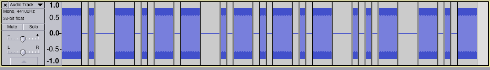

Well, the answer was "www.msudbury.uk", which I know isn't very funny or creative, and you probably could have guessed it after the first two characters, but nevertheless I hope you figured the whole thing out. If you didn't, I don't know what to suggest apart from listening to it on repeat, and perhaps on a slowed down playback. The answer to the other one was "Mayans are coming"... No, I don't know either.
If you're wondering how I made this file, I used the Audacity application, and the "Tone" and "Silence" tools in the generate menu of it, to create something like this:
The tone was 550Hz, and each dot was 50ms long.